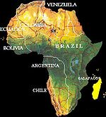
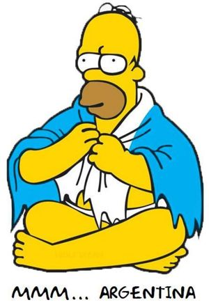

Argentina
 De: La Frikipedia, la enciclopedia extremadamente seria.
De: La Frikipedia, la enciclopedia extremadamente seria.
| De la serie Países del planeta tierra:
|
| La Argentina
|
|
| Lema: ¡Che, boludo!
|
Himno: Brasilero, brasilero, qué amargado se te ve
|

|
| Capital
|
Buenos Aires
|
| Mayor ciudad
|
Buenos Aires
|
| Lenguas oficiales
|
Argentino, lunfardo
|
| Gobierno
|
Kirchnerista
|
| Dios
|
Maradona
|
| Área
|
Europa (es lo que les gustaria)
|
| Población
|
La tercera parte son floggers, otra tercera parte son villeros, otra tercera parte adoptó las costumbres de Homero Simpson, y la ultima tercera parte son refugiados políticos paraguayos. Nota: solo hay 0.001 % de chilenos porque los argentinos se cagan en los aman tanto que vuelven a su pais
|
| Moneda
|
CEDIN
|
| Zona horaria
|
La que quiera el general Perón
|
| Dominio Internet
|
.che
|
| Código telefónico
|
54
|
| Se consideran un país con buena gente. Probablemente se deba a la cantidad de inmigrantes que alberga
|
Argentina, conocida mundialmente por ser el país donde nacieron Maradona y Messi, es la primera potencia mundial en número de pedantes, soberbios y charlatanes insoportables por metro cuadrado. Es común referirse a ella como "el culo del mundo", sobre todo en textos de geografía, aunque esta definición es algo imprecisa, ya que se trata en realidad de la nalga izquierda (y Uruguay la nalga derecha).
Argentina se encuentra en el año 55 d.D. (después de Diego), ya que han adoptado la verdadera religión, la religión Maradoniana, su año 0 es en realidad 1960 y el Año Nuevo lo celebran cada 30 de octubre.
Ubicación y Geografía
Pese a que una de sus mayores aspiraciones en la vida es ser europeos, los argentinos viven en Sudamérica, aunque no lo quieren admitir abiertamente, y viven sumidos en un penoso "quiero y no puedo". Los argentinos no se contentan con poco. La galaxia "Vía Láctea" queda en el culo del Universo (todavía no se pudo determinar bien dónde, si es que hay referencia). El sistema solar "Sol" queda en el culo de la galaxia (un mero brazo exterior). Argentina queda en el culo del mundo. Según declaraciones de perfeccionistas argentinos y del mundo incluyendo la antártida, queda en el exacto ortocentro del mundo, con precisión milimétrica, gracias a minuciosos cálculos. Tal vez esta centralización se deba a que Dios es argentino y necesita estar equidistante de el resto del universo. Esta es la razón por la cual no cuadra la teoría de la relatividad con la ley de gravitación universal. Las dos pronto serán sustituidas por la Ley De La Culerización Univerasal pronta a publicarse por el Instituto De Astrofisicamatemática Bonaerense. ¿Qué lugar más cómodo que el Culo del Universo para la administración del mundo?
Composición racial
En un principio Argentina estaba poblada por una serie de indios que fueron exterminados por españoles, italianos y demás europeos que se aburrían de matar negros (entendedlos, confundieron indios con gitanos). Tras la llegada de éstos, el país es una mezcla de italo-gallegosespañoles de ojos claros y piel blanca (de ahi proviene el odio de sus vecinos indígenas de color mierda más oscuro y derivadas tonalidades), con una importante minoría de falsos argentinos, gente no italo-española que se hace pasar por argentinos de bien y en realidad son espías chilenos pintados con tiza blanca y lentes de contácto colorídos. Se les nota porque solo dicen "weón, weas y cosas asi: si escuchás a un tipo decir "platicar", "apartate", "vota eso en el cubo", "carro" (en lugar de auto), tú en lugar de vos y otras pelotudeces de "hermano latinoamericano" ; NO es un argento.
Los argentinos quieren ser europeos, aunque viven en sudamérica, y eso les jode mucho. Se sienten franceses pero les gustaría ser alemanes. Son hijos o nietos de españoles e italianos exiliados, más o menos por igual, hablan un español pésimo del medievo con un empalagoso acento italiano, y como se sienten buenos europeos odian a los ingleses y a los sudacas panchitos, con lo que ganan muchos puntos al venir a España. Son “gente” con una identidad bien definida, como se ha expuesto claramente.
División política y sociedad
Argentina está divida en villas y countries.
Villeros y chetos
Los habitantes de las villas se denominan paco o la conocida "yerba", entre otras sustancias.
Una de las diferencias más notables es que los villeros aceptan su estado económico o social, en cambio, los chetos utilizan cualquier objeto o medio, como celulares, ropa o vehículos de valor elevado, para promocionarse como un sujeto de alto nivel económico.
Sin embargo, ambas culturas se han vinculado estrechamente al ser expresiones artísticas del sector villero apreciadas por la comunidad cheta. Se produce así la denominada movilidad social, donde parte de un grupo puede llegar al otro.
Uno de los ejemplos más destacados de éste fenómeno social, es la cada vez más creciente cantidad de cumbia(véase música).
Otros
Existe (o por lo menos se cree) un grupo neutral (probablemente enemistado con los dos grupos anteriores citados) los que son conocidos en el resto del mundo como "gente normal". Esta gente normal a su vez tiene algunas subdivisiones como:
- Los frikis: Aunque son pocos hay algunos. Se cree que están en peligro de extinción.
- Los góticos: Todos piensan que no existen, hasta que salen de las sombras, te tiran rayos paralizantes y beben tu sangre. A diferencia de los Darks, son mas formales e inteligentes.
- Los Darks:intento de "goticos", pero de una manera sucia, son maleducados y fanaticos de la maldad. pero son unos imbeciles y no sirven ni para lavarse el culo.
- Los nerds: IDEM frikis
- Los otakus: fanaticos del anime, cómo en todo el mundo hay.
- Los visual: parecidos a los otakus, usan barbijo, porqué? nose.
- Los rolingas: Escuchan bandas de rock nacional, principalmente "viejas locas", "ojos locos", "intoxicados", "los piojos", etc... Dan apariencia de sucios, la mayoria lo son, y sus dioses son Mick Jagger y Keith Richards. Viven bailando el pasito de la gallina de Mick Jagger. Se caracterizan por usar morrales de tela estilo inca y/o "machu-pichu", no pueden faltar en sus jeanes rotos o sus pantalones de tela con rayitas de colores, un parche de la lengua de los rolling-stones. Usan zapatillas topper blancas o rojas generalmente, que estan completamente rotas, y las tienen desde que se las regaló la tía a los 3 años, se les ven los dedos y otras partes, del pié. Las canciones "Sactisfaction", "Star me up" y "Brown Sugar" son como la biblia para ellos. Su lenguaje al igual que su inteligencia, es muy escasa, se "comen las eses" (la letra), al igual que los negros cabeza/villeros.
- Los FASO
- Los rastastones: Hibridos, mitad rolingas mitad rastas. Adoran "la birra"
- Los cumbieros: Son mayoría especialmente en la capital y las zonas mas humildes de la ciudad. Escuchan su música enfermiza (cumbia) y han asimilado, para si, el reggaeton. Un villero tiene mucho en común con un cumbiero, sólo que el villero tiene menos guita.
- Pseudo-fiesteros: No son completamente cumbieros. Comparten sus gustos musicales, su afición por los autos tuneados y las 'amigas' de baja reputación, pero no presentan (por lo menos todavía) el síntoma de desaparición de masa encefálica propia de un cumbiero 100% desarrollado. Además son buenos tipos y grandes amigos (créanme, yo tengo algunos).
- Algunos jebis: Son muy escasos y es difícil encontrarlos. Escuchan obviamente heavy metal. La mayoría de los pocos heavys que existen en argentina se ubican en el conurbano bonaerense.
- Los Pseudo-villeros: Son imitadores de los villeros.
- Los CUMBIO, una gorda asquerosa y bisexual. Los flogger Son los que te pasan todo el tiempo sus flogs para que les firmes, pero no puedes porque no tienes flog, entonces, dicen/escriben (la mayoría lo hacen por Mésenller) "ah, bueno" y al minuto te lo pasan de vuelta. En su mayoría, son ex villeros o primos/hermanso de los chetos, y les gusta ser golpeados en el Abasto por los villeros. Tambien son conocidos comos los nuevos tipos de pokemon, los pokenejos, una melzcla de pokemon y conejo( esto se debe a que este ultimo año se vienen multiplicando como conejos o como el Sr Smith, vease en Matrix).Ultimamente se decidió eliminarlo ye que son una sobre población, pero aún así fué imposible.
- Los emos: vease EMO.
- Los metaleros: Se encargan de mantener el orden y equivalencia de emos, floggers y cumbieros en el pais, derribando a algunos cuando su poblacion se exede de lo permitido. Muchos los llaman héroes. Tambien son bastante sucios y algunos son muy irrespetuosos, pero otros son un pan de Dios.
- Los soyloquesoy:Los que son un poco de todo, pero se caracterizan por tener un estilo unico, escuchan casi todos los estilos de música. Cada vez que alguien les pregunta "qué sos?" ellos responden "nada, soy yo, soy lo que soy".
- Los normales: aburridos, no se caracterizan por nada en especial.
- Los fears: Y/o, MISTERIOSOS, no llega al termino de "tribu urbana", simplemente son individuos sueltos. los fear son personas que andan solas generalmente, son muy inteligentes, escuchan de todo tipo de musica menos reggaeton y cumbia, y todo tipo de musica tropical a excepcion del reggae. Los fear son personas a favor de la paz, cada uno posee sus creencias, su vestimenta se caracteriza por ser "apagada", usan colores como azules oscuros, verdes oscuros, beiges, marrones, bordoes, etc. Su manera de ser y su mirada es lo que más asusta a la gente, por eso "fears".
- Los rockers:Son los que escuchan la música popular y vieja en ingles, que fue de los años 50 hasta los 90. Son fanaticos de Pink-Floyd, Led-zeppelin, y esas cosas.
Cultura
Argentina es el eje contrario de la cultura mundial, ya sea por sus obras artisticas (mundialmente reconocidas, excepto por los mismos argentinos, a menos que el autor fallezca), y por el elevado interés de sus habitantes por saber más o menos. A pesar de ser cerrados de-mentes, es muy frecuente que las luminarias que tienen la gracia de ser argentinas terminen en otros paises, haciendo la mitad de lo que hacian en las tierras sureñas, y percibiendo el doble o triple de salario. Por algúna razón que los científicos aun no determinaron, los argentinos que habitan en el exterior son o bien profesionales de capacitación primer mundista (¿de donde la sacaron?... es un misterio) o jugadores de furbo.
Literatura
Las obras literarias más importantes:
- "Amemos a nuestros vecinos, todos somos hermanos", un libro donde la sociedad argentina manifiesta un gran amor por los chilenos, los bolivianos y los brasileños.
- "Amemos a nuestros vecinos, todos somos hermanos (2º EDICIÓN)", editado para añadir a los uruguayos luego del conflicto de las fábricas de pasta de celulosa de la empresa finesa Botnia y la española Ence, que ostentan instalarse a orillas del río Uruguay, compartido por ambos países.
- "Amemos a nuestros vecinos, todos somos hermanos (3º EDICIÓN)", editado para añadir a los alemanes luego de la pérdida mundialística contra Alemania en el Mundial de fútbol Alemania 2006.
- "Robbing for dummies", un manual muy prestigioso cuyas enseñanzas quedaron grabadas en el corazón de todos los políticos argentinos (los villeros no lo necesitaron, excepto con la "gente normal" y los guiris, ya todos sabemos que los chetos comparten sus bienes con ellos muy gustosamente).
- "Vecinos invasores ", obra en la que Argentina se revela y que no es una mierda de hermano con los chilenos.
La autora de éstas cuatro joyas literarias fue la vaca lechera, quien murió pocos años más tarde en un rodaje de un comercial de La Serenísima.
Música
Argentina también se destaca por su gran participación en el ámbito musical, siendo así precursora de diversos géneros musicales, los cuales nombramos a continuación.
- Cumbia o Cumbiancha: En su versión argentina, un intento fracasado de música que incorpora diversos sonidos tropicales producto de la conjunción y utilización de determinados instrumentos cuyo valor económico ronda alrededor de los cinco centavos bolivianos.
- Cumbia villera: Versión moderna de la cumbia, cuyas líricas giran en torno al consumo de sustancias que alteran el sistema nervioso, así como la práctica del coito o denominado acto sexual en forma promiscua y descontrolada, y la obtención de diversos bienes por métodos poco convencionales.
- Cuarteto y tropical: Genero muy popular ... (casi como la cumbia) de origen cordobés (provincia que inventó el "che culiau") mezclando melodía pegadizas y mucho movimiento físico altamente coordinado... El máximo representante a nivel cuartetero es el único: La Mona Jiménez... Se rumorea que es un complot del pasajero principal del "Air Force One" para hipnotizar y esterilizar a esa región y alrededores así como el reggaeton en sus contrapartes del centro de América...
- Rock Nacional: Llamado asi al Rock del país, genero que al contrario de los tres de arriba tiene una enorme calidad musical. Hoy en dia sigue creciendo desde los años 60.
- Tango: Música casi-extinta, que se cuenta que era de gran calidad, mientras fue aplastada por la cumbia.ademas de argentina sobrevive en oriente (Uruguay y Japon)
- Música Rolinga: Versión más "argentina" del rock tradicional.
- Música electrónica, "marcha" o "punchi punchi": Género que últimamente está de moda, en especial el techno, el trance y el house. "Punchi punchi", es una denominación inventada por quién sabe que pelotudo para denominar el ritmo característico de esta música: punchi punchi punchi punchi punchi punchi punchi punchi punchi punchi y podríamos seguir así todo el día. Ultimamente los Glam le han dado un nuevo giro a esta musica bailandola como si se tratase de pisar cucarachas de manera no elegante.
- Música Para-Para: No podía faltar. Hay otakus por todo el mundo -.-" .
Arquitectura
Argentina fué la precursora de un nuevo estilo arquitectónico moderno, económico e innovador que consiste en la utilización de determinados materiales de construcción como la chapa y el cartón.
Dichas construcciones se denominan ranchos y la agrupación de las mismas se conoce como miseria o, simplemente, villa.
Televisión
Los Argentinos son de ver durante gran cantidad de horas diarias de televisión, generalmente nunca se ve nada específico excepto los domingos, que el 90% ve fútbol y un 69% ve rally o programas en que unos boludos van echando puta en coche y se hacen mierda un 60% de las veces (si pero es mejor que ver un negro cuerneado por un toro). Generalmente la población femenina se dedica a ver las "telenovelas", las que se ven incluidas desde Montecristo (montecristo es argentino) y El Zorro (la novela, no mal interpreten el titulo) hasta las mierdas (generalmente de origen argentino-porteño) como Floricienta y Casi-Ángeles que por alguna razón extraña son bien vistas en los demas países sudamericanos menos en la propia Argentina...
El 96.79% ve la conocida serie "Los Simpsons", el 1.31% no la ve porque afirman que estupidiza a los espectadores (lo que se contradice porque éstos no lo ven y son los más estúpidos de las encuestas) y el otro 2% son los hijos de p* * a que no nos quisieron contestar la encuesta. A causa de este gran porcentaje de espectadores se denomina a Argentina como el Springfield de Sudamérica.
Lenguaje
Véase: Anexo:Lenguaje de Argentina.
Nota: Estos términos se utilizan en todo el país, pero sólo en la capital hablan. El resto de las provincias cantan para hablar, como los cordobeses, santiagueños...(excepto Río Negro y Neuquén entre otras pocas)
Para un mayor entendimiento se recomienda leer: "Idioma Argentino".
Los Argentinos No...
- El Argentino no saluda: te dice, qué hacés boludo/chabón,(culiado, en el caso de los cordobeses
- El Argentino no se cae: se hace mierda.
- El Argentino no se enamora: está hecho un pelotudo/se RE enamora.
- El Argentino no te besa: te chapa/tranza/come.
- El Argentino no te convence: te hace/come la cabeza.
- El Argentino no se lanza: te hecha los galgos.
- El Argentino no se baña: se pega una ducha.
- El Argentino no se alimenta: come como un hijo de puta/como la sanconcha puta de la lora.
- El Argentino no te golpea: te caga a palos.
- El Argentino no te reprende: te caga a pedos.
- El Argentino no tiene amantes: tiene amigovias.
- El Argentino no tiene ganas de hacer pis: se está meando.
- El Argentino no orina: se hecha un cloro/meo.
- El Argentino no se tiró un pedo: se cagó.
- El Argentino no sufre diarrea: se caga encima.
- El Argentino no tiene miedo: se caga en las patas/se caga todo.
- El Argentino no sale corriendo: sale cagando/a los pedos
- El Argentino no se dispersa: se cuelga/pierde.
- El Argentino no se ríe a carcajadas: se caga de risa.
- El Argentino no está en problemas: tiene quilombos/está hasta las pelotas.
- El Argentino no se mete en problemas: arma quilombo/bardo.
- El Argentino no te molesta: te hincha los huevos/te rompe las pelotas.
- El Argentino no te pide que lo lleves: pide que lo tires.
- El Argentino no es un tipo alegre: es un copado/buen pibe.
- El Argentino no es un buen tipo: es de primera/un fenómeno/un maestro.
- El Argentino no está aburrido: está al pedo.
- El Argentino no hace algo mal: le sale para el orto/para la mierda.
- El Argentino no habla claro: te bate la justa.
- El Argentino no dice la verdad: dice la posta.
- El Argentino no es cualquier cosa: ¡es una masa!
- El Argentino no juega bien al fútbol: la mueve/rompe/hace magia.
- El Argentino no juega al fútbol: juega al fulbo/a la pelota.
- El Argentino no tiene sueño: tiene fiaca/pacho/paja.
- El Argentino no se va a dormir: va a la catrera/se va a hechar un sueño.
- El Argentino no pone: planta.
- El Argentino no piensa: usa el bocho.
- El Argentino no Te Hace el Amor: Simplemente Te coje.
- El Argentino no Te Llama por telefono:te pega un tubazo
Deporte
Existen deportes como el "Polo", donde los chetos realizan sus cortejos de apareamiento demostrando toda su virilidad, mientras corren arriba de un caballo para pegarle a una bola con un martillo largo de madera. Sin embargo, como los pibes no tienen para comer, se la pasan jugando fútbol. Dan jugadores muy enanos habilidosos. El máximo representante del deporte en la República Argentina es Diego Armando Maradona, también conocido como "La mano de Dios" o simplemente Dios(de la Iglesia Maradoniana). Otros deportistas destacados son Manu Ginóbili (competidor por la nariz mas grande del mundo Copa Mundial de Basquetball), Lionel Messi, Agustín Pichot, Santos Viasati Mariano Puerta, David Nalbandian, Agustín Pichot, Guillermo Vilas, Carlos Monzón, Ringo Bonavena, El Roña Castro, Ernesto Che Guevara , Guillermo Francella...
Y entre las mujeres que practican el deporte del chotting destacamos a Pampita, Luciana Salazar y Silvina Luna.
También podemos apreciar una destacada participación en el sobachot por parte de Wanda Nara (hexacampeona del mundo).
Religión
Iglesia Boquense
Donde se idolatra a Maradona, no por sus logros futbolísticos (de hecho no saben que jugó para otros equipos que no fue Boca), sino por ser fiel a sus costumbre (falopa, alcohol, timba, putas) algo infaltable para este dogma. También tiene otras deidades como el Rafa Di Zeo, Martín "tabla de planchar" Palermo, el Guille, que ganó 14 títulos con Boca (9 los vio en el banco y 2 en la reserva), y como olvidarse del inolvidable Huevo Toresani, que fue echado de River por su incompatibilidad con las habilidades para desarrollar este deporte.
Los perones
También, otras religiones aunque mas oscuras y antiguas, gozaron de gran aceptación. El Peronismo, por ejemplo. El culto a San Juan Domingo Perón prosperó durante muchas décadas. Cuentan las leyendas que sus clérigos, los sindicalistas podían transformar los libros en zapatillas, con esos poderes desterraron a la anterior magocracia establecida por San Martín y su logía Lautaro ya que los herméticos de segunda de esta logía no podían usar sus poderes al desaparecer sus libros de conjuros.
El culto llegó a su fin cuando San Juan Domingo Perón consumió las almas de todos sus fieles durante los años setenta y las utilizó para convertirse en liche (de esto surge la teoría de que Perón reencarnó en Shao Kahn)
Aprovechando lo debilitante del proceso su eterno enemigo el liche, conocido como El guardián de la biblioteca que es el universo, o simplemente Jorge Luis Borges, le cortó las manos con las hojas de un libro forjado en universo paralelo, hecho solamente de ideas, no sin que antes el liche Perón lo dejara ciego con un ataque de carisma peronista.
Otras más
Existen también algún que otro cristiano, Testículo de Jehová, pastafari, haruhiista, Pastafrolo, etc.
Humor argentino y chistes sobre argentinos
 Homero viendo un partido de Argentina
Los argentinos le sacan punta a todo, son la bomba. No hay más que recibir una llamada de las tele operadoras de Timofónica para comprobar que un argentino sabe salir airoso de cualquier circunstancia.
A continuación vamos a ver un ejemplo del típico humor argentino, que entre los más destacados, la mayoría se burla de los españoles brutos, (aunque sus chistes están copiados de los chistes sobre leperos en España).
- ¿Qué hace un gallego mirando la gondola desde abajo?
- Trata de buscar los precios bajos.
- ¿Qué hace un gallego desenterrando un árbol?
- Está buscando la raíz cuadrada
- A un gallego le dijeron que su mujer lo engañaba con su mejor amigo...
- Entonces mató al perro.
- En su viaje a Nueva York, Manolo compró una televisión para llevársela a su familia.
- "¿Es qué no hay televisores en su país?", preguntó alguien.
- "Claro que los hay, pero los programas de aquí me gustan mucho más".
- Un gallego le dice a otro: Oye Manolo pásame otro shampoo.
- "Pero si ahí en el baño hay uno"
- "Si hombre, pero este es para cabello seco y yo ya me lo he mojado"
- La gallega había tenido un parto difícil. Se le acerca el médico y le dice:
- "El bebé está bien, pero le tuvimos que poner oxígeno"
- "Coño, yo que quería ponerle Manuel..."
- ¿Porqué han dejado de poner películas en los aviones en Galicia?
- Porque al terminar la película todos salían por la puerta de atrás.
- ¿Cómo se suicida un gallego?
- Se tira desde lo más alto de su ignorancia.
- ¿Porqué los gallegos no entran a la cocina?
- Por que un ingrediente dice "Sal"
- ¿Porqué cuando se van a lavar los dientes se mueren los gallegos?
- Porque cuando leen la pasta COLGATE se cuelgan.
- ¿Porque los gallegos no ven la TV desnudos?
- Porque ven América TV
- ¿Cuál es el animal que vuela más alto?
- El piloto de Iberia.
- Se encuentran dos gallegos y uno le dice al otro: "¿Oye Manolo no quieres venir a una orgía?" y Manolo le responde:- "No puedo José, estoy con gonorrea y blenorragia" y Manolo le replica "¡No importa hombre! ¡qué también los vascos pueden venir!".
Debido a lo apreciados que son los argentinos en el resto del mundo, también se han creado multitud de chistes sobre ellos, en todos los paises:
- ¿Cómo se suicida un argentino?
- Se sube a su ego y salta. Pero no muere por el impacto, sino de hambre durante la caida.
- ¿Cuál es la mejor universidad del mundo?
- Aerolíneas Argentinas. Porque en Argentina son barrenderos, cajeros de banco o secretarias y cuando llegan al exterior son científicos, cirujanos, directores de cine, catedráticos o psicoanalistas.
- ¿En qué se parecen Superman, Batman y un argentino humilde y honrado?
- En que ninguno de los tres existe, todos son personajes de ficción.
- ¿Por qué los argentinos sonrien mirando al cielo cada vez que hay un relámpago?
- Porque creen que Dios les está haciendo una foto.
- ¿En qué se parecen un médico y un abogado argentinos?
- En que los dos son taxistas.
- ¿Cuál es el mejor negocio del mundo?
- Comprar un argentino por lo que vale y venderlo por lo que él dice que vale.
- Dos bolivianos conversando:
- Edison, un argentino me ha defraudado.
- ¿Ya te estafó?
- No, me dio un cheque... ¡y tenía fondos!
- Va un negro por la calle con un gorro judío en la cabeza y le para uno de S.O.S. Racismo:
- Caballero, usted debe tener muchos problemas en la vida siendo negro y además judío, ¿no?
- ¡Che, pibe, aún no sabés lo peooor...!
- ¿Por qué en la Argentina nunca van a sufrir con los terremotos?
- Porque ni la Tierra los traga.
- ¿Por qué los argentinos se creen dioses?
- Porque nadie los puede ver.
- ¿Por qué el tango es tan famoso en el mundo?
- Porque en cada tango casi siempre muere un argentino.
- ¿Cómo se sabe en qué lugar de un cementerio está enterrado un argentino?
- Es la tumba de donde los gusanos están saliendo a vomitar.
- ¿Qué es un argentino sin pies, manos, brazos y descerebrado?
- Una persona digna de confianza.
- Llegan un hindú, un argentino y un judio a un hotel y piden un cuarto para los tres, pero el :dueño les dice que solo le queda una habitación para dos, aunque dispone de un establo donde se puede quedar una persona. El hindú dice que el va al establo. A los 5 minutos llaman a la puerta, es el hindú que les dice "en el establo hay una vaca, en mi religión es un animal sagrado y yo no puedo dormir donde duerme una vaca", entonces dice el judio "yo iré al establo". A los 5 minutos tocan la puerta de nuevo, es el judio que dice "en el establo hay un cerdo y mi religión lo considera un animal impuro, asi que no puedo dormir junto a el", por lo que el argentino dice "yo me voy al establo". Tras un minuto llaman frenéticamente a la puerta y la abren sin pedir permiso, son la vaca y el cerdo, histéricos, que gritan "¡¡¡NO JODAN!!!".
- ¿Qué le tiran a un argentino cuando se esta ahogando?
- El resto de la familia.
- ¿Cuáles son los tres monosílabos que jamás pronuncia un argentino?
- No lo sé.
- ¿Cuál es el juguete favorito de los argentinos?
- El yo-yo.
- ¿Por qué en Argentina hay tantos casos de sietemesinos?
- Porque ni su madre los aguanta nueve meses.
- ¿Qué nace de un argentino con una empleada del servicio?
- Un portero que se cree dueño del edificio.
- En una maternidad de Barcelona hay un mexicano, un español y un argentino. Sale la enfermera y dice:
- "Tenemos un problema. Se nos confundieron lo bebes y ahora no sabemos cuál bebé es cuál. Tenemos dos blancos y uno negro".
- Los tres nuevos papás deciden sacar a la suerte para ver quien escoge a su bebe primero, y gana :el español. El español entra a la sala de maternidad, sale con el bebé negro y el mexicano le dice:
- "Mire, guey, el bebé es negro, yo soy negro, mi esposa es negra, así que este bebé es mío. Agarre uno de los blancos..."
- ¿Está loco? ¿¿¿Y si me toca el argentiiino???
- Un argentino llega al aeropuerto de Barajas y su primer contacto con los naturales de la región es al comprar cigarrillos.
- "Buenas, Gallego. Dame fasos" Le dice al señor que no era oriundo de Galicia.
- "¿Como?
- "Fasos... puchos... coso para fumar..." Dice haciendo el gesto característico.
- "Verá Usted, ahora que he visto el gesto entiendo que lo que busca son cigarrillos, pitillos"
- "Si, loco, 'ta bien. Dame fósforos"
- "¿Qué?
- "Fósforos, che, pa' prenderlos esos pitiyos que fuman ustedes" Dice gesticulando
- "Nuevamente, por su gesto adivino que lo que Ud. solicita son cerillas..."
- "Che, ahora tengo que aprender a hablar de nuevo: pitillos, cerillas..." protesta de mal humor.
- Y prosigue, muy enfadado: "Y decime, gallego ¿acá a los tontos cómo los llaman?
- "No los llamamos: vienen solos por Aerolíneas Argentinas"
Personalidades más destacadas de Argentina
Curiosidades
- Les gusta fantasear imaginándose que las españolas, italianas, brasileñas, venezolanas, colombianas, chilenas, uruguayas y mexicanas le suplican de rodillas que se las cojan con solo verlos pasar. Pobres.
- Tienen la estúpida manía de llamar a todos los españoles gallegos, cuando la especie más extensa de españa son los españoles
Como molestar a un argentino
- El Río de la Plata es en realidad un estuario y ni siquiera el más ancho (ese es el Río San Lorenzo, Canadá).
- La avenida 9 de Julio no es la más ancha ni la Rivadavia la más larga.
- La birome fue inventada por un húngaro, no un argentino.
- Vivirían mejor si se hubiesen dejado conquistar por los ingleses en 1806.
- Son buenos en el fútbol, solamente superados por Brasil, Inglaterra, España, Alemania, Italia, Francia, toda Europa.
- Las mejores mujeres son brasileras, no argentinas.
- Su rock es apenas una copia barata del estadounidense y el inglés.
- Sólo díganles que Perón se carteaba con Hitler.
Autor(es):
- Krusher
- Nexo
- Darz Mol
- Motherfucker
- Santiago
- Hari Seldon
- Juantxorena
- MeDeA
- Andro-lol
- Jimmy ray
Frikipedia 2005-2016, Licencia
GFDL 1.2 - Extraído por FrikiLeaks